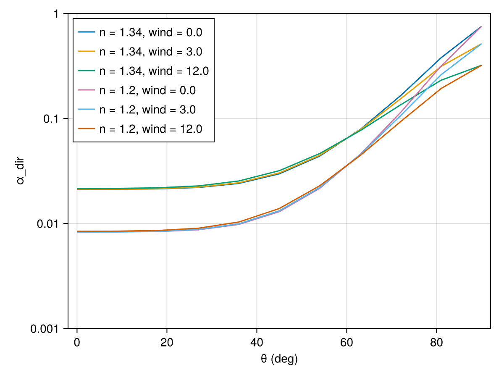
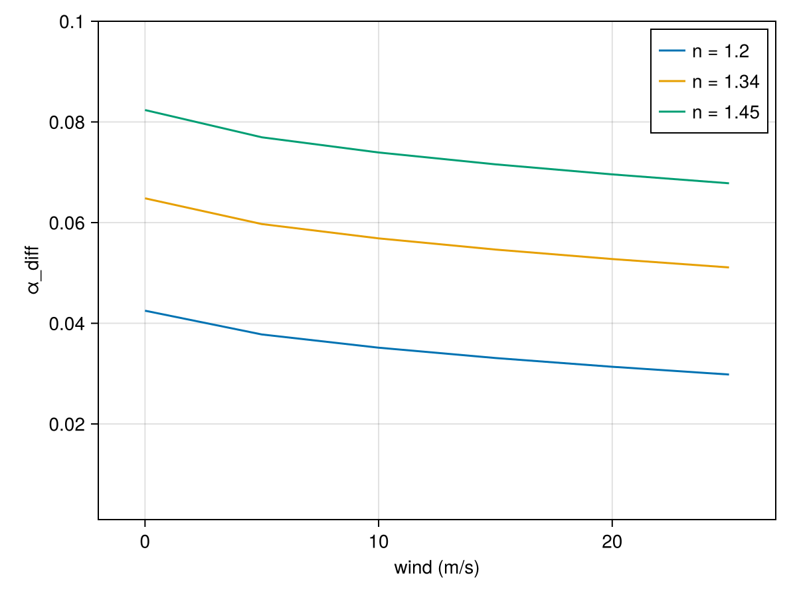

Ocean Surface Albedo
The ocean surface albedo is the fraction of solar radiation that is reflected by the ocean surface. It is a key parameter in the Earth's energy balance and is important for understanding the ocean's role in the climate system. The surface ocean albedo is a function of the solar zenith angle, the sea surface roughness (which depends on wind speed) and wavelength of the incoming radiation.
Currently, there are two methods available to specify ocean albedo:
1) ConstantAlbedo
The default value is 0.38 (following [4]) and is used purely for idealized experiments.
2) RegressionFunctionAlbedo
This is an empirically-derived parameterization of the direct and diffuse surface albedo of Jin et al. (2011) [5] (note, reflectivity of the inner ocean is ignored). The direct reflection is calculated using the Fresnel reflection at the air-sea interface due to the difference in refractive index between air and water. Note that the current implementation is using the broadband representation (relative refractive index, $n$, is independent of wavelength). Its formulation is:
\[α_{dir}(λ, μ, u) = r_{f}(n, μ) - \frac{r_{f}(n, μ)}{r_{f}(n_{0}, μ)} f(μ, σ(u)) \]
where:
\[λ\]
is the wavelength (currently unused)\[μ\]
is the cosine of the solar zenith angle\[u\]
is the wind speed\[σ(u)\]
is the mean wave slope distribution width following Cox and Munk (1954), with $\sigma^2 = 0.003 + 0.00512u$, with u being the surface wind speed\[r_{f}(n, μ)\]
is the Fresnel reflectance (e.g., see [6]):
\[ r_{f_p}(n, θ) = \left(\frac{n^2 \cos(θ) - \sqrt{n^2 - \sin^2(θ)}}{n^2 \cos(θ) + \sqrt{n^2 - \sin^2(θ)}}\right)^2 \]
\[ r_{f_s}(n, θ) = \left(\frac{\cos(θ) - \sqrt{n^2 - \sin^2(θ)}}{\cos(θ) + \sqrt{n^2 - \sin^2(θ)}}\right)^2\]
where we assume an equal contribution from the p and s polarizations, so that $r_{f}(n, θ) = 0.5(r_{f_p}(n, θ) + r_{f_s}(n, θ))$, and the perfect dielectric medium approximation.
\[n_0=1.34\]
is the refractive index of water for visible light\[n\]
is the relative refractive index of water and air ($n = n_w/n_a$), and is assumed to be equal to $n_0$ for the broadband representation\[f(μ, σ)\]
is the regression function, defined as:
\[f(μ, σ) = (p_1 + p_2μ + p_3μ^2 + p_4μ^3 + p_5σ + p_6σμ) \exp(p_7 + p_8μ + p_9μ^2 + p_{10}σ + p_{11}σμ)\]
where the coefficients are given in the table below:
| Coefficient | Value |
|---|---|
| $p_1$ | 0.0152 |
| $p_2$ | -1.7873 |
| $p_3$ | 6.8972 |
| $p_4$ | -8.5778 |
| $p_5$ | 4.071 |
| $p_6$ | -7.6446 |
| $p_7$ | 0.1643 |
| $p_8$ | -7.8409 |
| $p_9$ | -3.5639 |
| $p_{10}$ | -2.3588 |
| $p_{11}$ | 10.0538 |
Diffuse reflection is calculated depending on atmospheric conditions. For clear sky, it is calculated using nearly isotropic Rayleigh scattering, and for cloudy sky, the albedo is adjusted for the presence of clouds. The formulations are:
\[α_{diff}(λ, μ, u) = -0.1482 - 0.012σ(u) + 0.1608n - 0.0244nσ(u)\]
for clear sky, and
\[α_{diff}(λ, μ, u) = -0.1479 + 0.1502n - 0.016nσ(u)\]
for cloudy sky. In the current implementation we assume clear skies everywhere.
3) CouplerAlbedo
This informs ClimaAtmos that albedo will be set by the coupler.
Comparison of RegressionFunctionAlbedo with Jin et al. (2011)
include("surface_albedo_jin11_plots.jl")CairoMakie.Screen{IMAGE}
- direct albedo (compare with Fig. 2)

- diffuse albedo (compare with Fig. 4)
